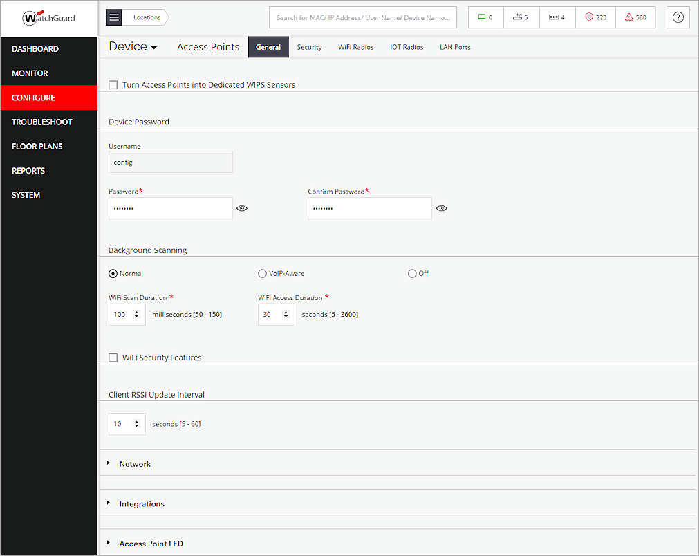

Deployment Overview
WatchGuard Wi-Fi Cloud integrates with Beonic (formerly known as Skyfii) to provide captive portal services to end users. With Wi-Fi Cloud, you can configure an SSID to direct users to the Beonic captive portal. This enables you to utilize your marketing campaigns configured in Beonic for your Wi-Fi Cloud users and send analytics data to Beonic servers.
Contents
Platform and Software
The hardware and software used to complete the steps in this document include:
- Beonic:
- Beonic Wi-Fi account (additional charges might apply)
- WatchGuard:
- WatchGuard AP125 with firmware version v13.0.2-28.902
- WatchGuard Wi-Fi Cloud account
- Wireless client devices
Test Topology
For more information about network port configuration for communications between your APs, Wi-Fi Cloud, and Beonic (Skyfii), go to the Beonic (Skyfii) documentation and the WatchGuard Wi-Fi Cloud documentation.
Configure WatchGuard Wi-Fi Cloud for Beonic Integration
These sections describe how to configure Wi-Fi Cloud to integrate with Beonic.
For detailed information on WatchGuard Wi-Fi Cloud AP deployment, go to the Wi-Fi Cloud Getting Started Guide.
Add a RADIUS Server
Before you begin, verify the RADIUS server settings with your Beonic (Skyfii) support documentation. These settings are subject to change.
- IP Address for primary RADIUS servers
- Authentication Port: 1812
- Accounting Port: 1813
- Shared Secret: radsec
To configure a RADIUS server in Wi-Fi Cloud:
- Log in to WatchGuard Wi-Fi Cloud.
- Open Discover.
- Select the location where to apply the settings.
- Select Configure > Network Profiles > RADIUS.
- Click Add RADIUS Server.
- Type the RADIUS Server Name, IP Address, Authentication Port, Accounting Port, and Shared Secret of the Beonic RADIUS server.
- Click Save.
- Repeat steps 4-7 to create a secondary RADIUS server.
- Click Save.
Add an SSID
To specify the parameters for wireless access, you must create and assign SSIDs to your APs. The SSID settings are automatically inherited from parent locations. Verify the correct top-level location folder when you create the SSID.
To add an SSID:
- Open Discover.
- Select the location where you want to apply the settings.
- Select Configure > WiFi, then select the SSID tab.
- Click Add SSID.
- Type an SSID Name and Profile Name.
- In the Select SSID Type section, select Guest.
- Select the Security tab.
- From the Select Security Level for Associations drop-down list, select Open.
- Select the Captive Portal tab.
- Select the Captive Portal check box.
- From the Cloud Hosted drop-down list, select Third-Party Hosted.
- Select the With RADIUS Authentication check box.
- In the Splash Page URL text box, type the appropriate captive portal domain.
Use the format: <captive-portal-domain>/welcome/watchguard/cloud.
For example: https://guestwifi-us.beonic.io/welcome/watchguard/cloud
Verify the regional captive portal domain name in the Beonic (Skyfii) support documentation:
- In the Shared Secret text box, type the shared secret for Beonic. Currently, this is secret. Verify this shared secret with the current Beonic support documentation before you proceed.
- In the Websites that users can access before login section (Walled Garden), make sure you add the Beonic portal URL and any other supporting sites that are used by the portal. For more information, view the Beonic support documentation for the required servers in your region.
You must add each IP address listed in your regional server documentation:
You must also add these addresses:
- skyfii.com
- All values in the appropriate ACL lists for your region.
- To enable social media authentication in the portal, add the addresses listed in Social Login ACLs & Global Domain / IP Whitelist.
- Leave the other options at their default settings.
- Click the RADIUS Settings link.
- From the Primary and Additional Authentication Server and Accounting Server drop-down lists, select the RADIUS server configuration you created for Beonic.
- Set the Accounting Interval to 1 minute.
- Leave the other options at their default settings.
- Click Save to save the RADIUS settings.
- Click Save to save the SSID settings.
The SSID is applied to APs in the selected location. Make sure you configure radio and device settings for your APs if you have not already configured these settings.
Get the WatchGuard AP Details for Beonic (Skyfii) Integration
You must record the name and MAC address of each WatchGuard AP you want to use in your Beonic integration.
To obtain the details for each WatchGuard AP:
- Open Discover.
- Select Monitor > WiFi, then select Access Points.
Your managed APs appear. - Record the Name and MAC Address of each AP you want to use with Beonic.
Configure Wi-Fi Cloud to Forward Analytics Data
This section is optional, if you don't want Beonic to collect your AP information, you can skip this section.
To configure Wi-Fi Cloud to forward presence analytics data to Beonic servers:
- Open Discover.
- Select the location where you want to apply the settings.
- Select Configure > Device > Access Points, then select the General tab.
- In the Device Password section, type and confirm the password for your device.

- Set the Client RSSI Update Interval to 10 seconds.
- Select Integrations.
- Select the Push Visibility Analytics to Third-Party Server check box.
- Select JSON as the Visibility Analytics Format.
- In the Server URL text box, type the URL of the Beonic analytics server.
Use the format: <ingest-domain>/watchguard/cloud/
For example: https://ingest-us.beonic.io/watchguard/cloud
Use the appropriate server for your region:
- Set the Send Interval to 10 seconds.
- In the Authorization section, select Key, then type the Beonic authorization key. For example: FHWqVX2FAFqo4wrXnLa87JmF4
Confirm this authorization key with your Beonic support documentation.
- Click Save.
Configure Beonic (Skyfii) for WatchGuard Wi-Fi Cloud
Before you begin, verify these directions with the Beonic support documentation (https://support.skyfii.com). These settings might change.
Create a Venue
- Log in to your Beonic Cloud region.
- Click
 in the upper-right corner of the Beonic interface.
in the upper-right corner of the Beonic interface. - Select Venues.
- Click Add New.
- Type a Name for the venue. In this example, type WatchGuard Test Venue.
- From the Region drop-down list, select your region.
- From the Timezone drop-down list, select your timezone.
- From the Category drop-down list, select an appropriate category.
- From the Registration Group drop-down list, select your registration group.
- Select the Enabled check box.
- From the Campaign Marketing List drop-down list, select a marketing list or select Create new Marketing List.
- From the Country drop-down list, select a country.
- (Optional) Type an Address, Suburb, Postcode, State, Latitude, and Longitude.
- Click Create.
- From the navigation pane, select Venues.
- Select the venue you created. In this example, select WatchGuard Test Venue.
- Select the Engage Settings tab.
- (Optional) Configure the Minimum minutes between contact, Marketing Email From Address, and Market Email From Name values.
- Click Save Changes.
Create an Access Point
To create an Access Point in Beonic:
- Click in the upper-right corner of the Beonic interface.
- Select Access Points.
- Click Add New.
The Create Access Point page appears. - From the Venue drop-down list, select the venue you created.
- From the Floor drop-down list, select Default Floor.
If you have created a floor, you can select the floor you created. In this example, select WatchGuard Test Floor. - Type the Name and MAC Address of the WatchGuard AP.
- (Optional) Click Add One or Add Range to add the MAC address of the access point.
- Click Create.
Create a Guest WiFi Portal
To create a Guest WiFi portal in Beonic:
- In the top navigation bar, click WiFi.
- Select Portals > Add New.
- On the Setup page, type a Portal Name. In this example, type WatchGuard Test Portal.
- From the Languages drop-down list, select one or more languages.
- From the Default Languages drop-down list, select one language.
- From the Assign a Venue drop-down list, select the venue you created. In this example, select WatchGuard Test Venue.
If you have created a user access group, select the group assigned to your venue. - Make sure the Enable Interstitial Page check box is not selected. For information about the Interstitial Page, go to Create a Captive Portal Survey.
- Click Next.
- On the Template page, select a template. In this example, select Coco.

- Click Next.
- On the New User page, customize your new user page.
You can drag to add widgets or delete existing widgets.
- Click Next.
- Customize the Return User page.
You can drag to add widgets or delete existing widgets.
- Click Next.
Note: If you select the Enable Interstitial Page check box on the Setup page, you will access the Interstitial Page instead of the Landing page. - On the Landing Page, customize your landing page.
You can drag to add widgets or delete existing widgets.
You can also use a specified external page as the landing page.
- Click Next.
- Review your settings.
- Click Publish, then click Publish again.
Test the Beonic Integration
To test your integration with Beonic:
- Use a wireless client to connect to the SSID you created in Wi-Fi Cloud.
- Open a web browser.
The Beonic splash page appears. - Complete the requested information on the splash page.
The configured landing page or specified external page appears. - After you have authenticated, access the Internet through the captive portal.
For more detailed wireless client information, select Engage > Registrations. When you click the client status icon, you can view the MAC address and visits activity.